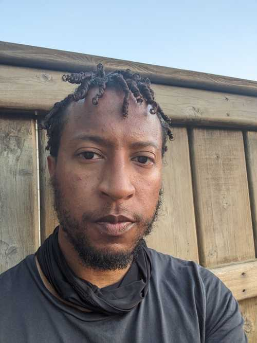

Brian is grew up San Jose, California and has lived in San Francisco since 2002. Before dabbling in email and ux design he worked in marketing and brand agency learning that best practices that impacted the goals of those clients.
These experiences and an interest in research led him to purse a master's in social psychology which emphasized emotions, motivation, goal pursuits.
Now he looks to take these experiences and interest an use in ux design. Be able to trust his intuition in the design of computer applications brings Brian so much joy and allow to him to follow inclination to help others and things.